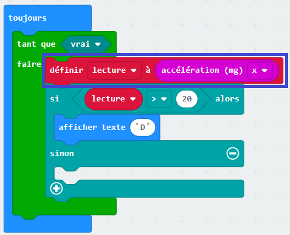

Pour dialoguer avec un système embarqué, par exemple dans une voiture, l'utilisateur manipule une interface composée
d'écrans, de boutons, etc... L'objectif de cette activité est de programmer une interface simple avec un émulateur en
ligne de carte micro:bit. Cette interface reproduira les commandes d'allumage des feux de détresse que l'on trouve à
bord d'une voiture.
La coarte micro:bit est munie de deux boutons, A et B, qui simuleront des boutons sur le tableau de bord du véhicule.
Elle présente également un écran de 25 LEDs lumineuses qui simulera le voyant lumineux des feux de détresse.
Deux approches indépendantes sont possible:
On souhaite développer l'interface d'un niveau à bulles électronique grâce au capteur d'accélération intégré à la carte
micro:bit. On donne ci-dessous une portion du code en blocs:

Faire le tutoriel "Dice" du site makecode.microbit.org
Faire le tutoriel "Multi Dice" du site makecode.microbit.org
Réaliser les activités proposées sur le site le livre scolaire (ne fonctionne qu'avec Android)